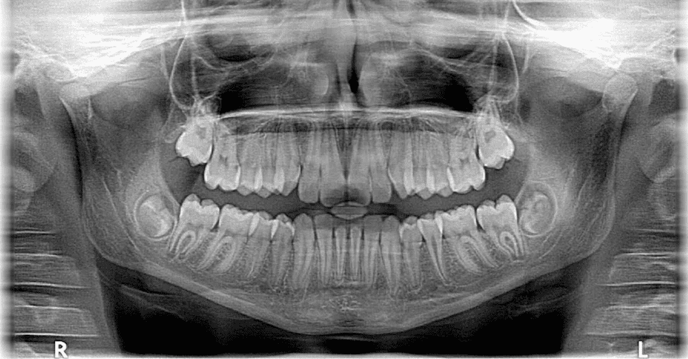
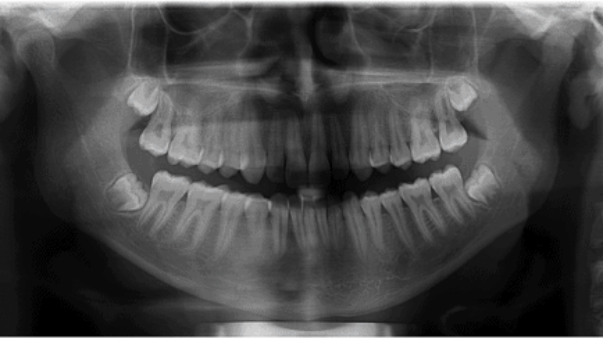

Perfil do Paciente
Informações do Paciente
Lucas Jesus
32 anos
lucas.jss@gmail.com
Imagens Selecionadas (2)


Percepções da IA
- Nenhuma cavidade encontrada
- Dentes saudáveis
- Possível remoção do dente do siso